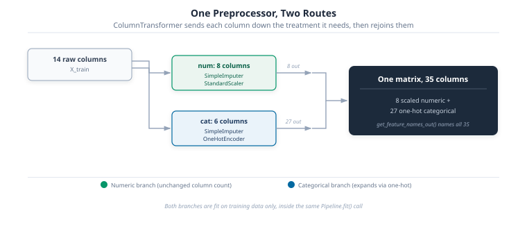

from pathlib import Path
from typing import Any
from great_tables import GT, md as gt_md
import joblib
from lets_plot import (
LetsPlot,
aes,
as_discrete,
geom_bar,
geom_line,
geom_point,
ggplot,
labs,
scale_fill_manual,
)
from loguru import logger
import numpy as np
import optuna
import pandas as pd
from scipy.stats import loguniform
from sklearn.compose import ColumnTransformer
from sklearn.dummy import DummyClassifier
from sklearn.ensemble import HistGradientBoostingClassifier, RandomForestClassifier
from sklearn.impute import SimpleImputer
from sklearn.linear_model import LogisticRegression
from sklearn.metrics import classification_report, f1_score
from sklearn.model_selection import (
GridSearchCV,
RandomizedSearchCV,
StratifiedKFold,
cross_val_score,
train_test_split,
)
from sklearn.pipeline import Pipeline, make_pipeline
from sklearn.preprocessing import OneHotEncoder, StandardScaler
from ark.plot.gt_style import metrics_report, themed_gt
from ark.plot.theme import modern_theme
from ark.plot.tokens import DANGER, INFO, SUCCESS
optuna.logging.set_verbosity(optuna.logging.WARNING)
LetsPlot.setup_html()Chapter 32: Sklearn pipelines and hyperparameter search


Six numeric columns and an F1 of 0.55, that was Chapter 31’s stopping point. Add six categorical columns, hotel, meal plan, market segment, distribution channel, customer type, deposit type, change nothing else, and that same LogisticRegression jumps to 0.70. Almost the same gap Chapter 31 opened with between a useless model and a working one, closed by six columns Chapter 31 never touched, exactly the room type and season signal it named as missing.
That jump is also where the risk gets worse. Chapter 31 counted six separate fit calls, scaler and model, twice over, as six places a leak could slip in. A categorical column needs its own encoder, fit its own way, on training data only, same as a scaler. Fourteen columns across two different treatments is no longer six fit calls to keep straight, it is closer to a dozen, and remembering the right order by hand stops being realistic.
A Pipeline is scikit-learn’s answer: every step, however many, wrapped into one object with one fit and one predict. Fit it and it fits every stage in sequence using only training data. Call predict and it applies every transformation in the same order, leakage no longer possible because there’s no manual step left to get wrong. This chapter builds one for the full fourteen-column feature set, tunes it three different ways, and closes the ML landscape part: Chapter 30’s workflow, Chapter 31’s two interfaces, combined into a single deployable object.
1. Growing the feature set
Same loader as Chapter 31, same dataset. What changes is how much of it gets used.
DATA_URL: str = "https://raw.githubusercontent.com/rfordatascience/tidytuesday/master/data/2020/2020-02-11/hotels.csv"
DATA_PATH: Path = Path("data/hotel_bookings.csv")
MODEL_DIR: Path = Path("models")
RANDOM_STATE: int = 42
def load_hotel_data(path: Path = DATA_PATH, url: str = DATA_URL) -> pd.DataFrame:
"""Load hotel bookings, downloading from url on first call."""
if not path.exists():
path.parent.mkdir(parents=True, exist_ok=True)
raw = pd.read_csv(url)
raw.to_csv(path, index=False)
logger.success(f"Downloaded {len(raw):,} rows to {path}")
else:
raw = pd.read_csv(path)
logger.info(f"Loaded {len(raw):,} rows from cache: {path}")
df = raw[(raw["adr"] > 0) & (raw["adr"] <= 1000)].reset_index(drop=True)
logger.info(f"After cleaning: {len(df):,} rows")
return df
df: pd.DataFrame = load_hotel_data()
logger.info(f"Shape: {df.shape[0]:,} rows x {df.shape[1]} columns")Eight numeric columns this time, Chapter 31’s original six plus two more, and six categorical ones that a plain StandardScaler has no way to handle: a hotel name or a deposit type isn’t a number, and forcing one into a numeric column would invent an ordering between categories that was never there.
NUMERICAL_FEATURES: list[str] = [
"lead_time",
"stays_in_weekend_nights",
"stays_in_week_nights",
"adults",
"previous_cancellations",
"booking_changes",
"total_of_special_requests",
"days_in_waiting_list",
]
CATEGORICAL_FEATURES: list[str] = [
"hotel",
"meal",
"market_segment",
"distribution_channel",
"customer_type",
"deposit_type",
]
ALL_FEATURES: list[str] = NUMERICAL_FEATURES + CATEGORICAL_FEATURES
TARGET_CLF: str = "is_canceled"Cardinality, how many distinct values each categorical column has, matters before any encoding happens: it’s exactly how many new binary columns OneHotEncoder is about to create.
cat_summary: list[dict[str, Any]] = [
{"feature": c, "n_unique": df[c].nunique(), "values": str(sorted(df[c].unique().tolist())[:6])}
for c in CATEGORICAL_FEATURES
]
themed_gt(GT(pd.DataFrame(cat_summary)), n_rows=len(CATEGORICAL_FEATURES)).tab_header(
title=gt_md("**Categorical features**"),
subtitle="Cardinality determines how many one-hot columns each one becomes",
)| Categorical features | ||
| Cardinality determines how many one-hot columns each one becomes | ||
| feature | n_unique | values |
|---|---|---|
| hotel | 2 | ['City Hotel', 'Resort Hotel'] |
| meal | 5 | ['BB', 'FB', 'HB', 'SC', 'Undefined'] |
| market_segment | 8 | ['Aviation', 'Complementary', 'Corporate', 'Direct', 'Groups', 'Offline TA/TO'] |
| distribution_channel | 5 | ['Corporate', 'Direct', 'GDS', 'TA/TO', 'Undefined'] |
| customer_type | 4 | ['Contract', 'Group', 'Transient', 'Transient-Party'] |
| deposit_type | 3 | ['No Deposit', 'Non Refund', 'Refundable'] |
Twenty-eight possible one-hot columns from six features, hotel contributing 2 and market_segment contributing 8. Split before any of that encoding happens, same rule as Chapter 31, now protecting an encoder’s learned categories instead of just a scaler’s mean:
X: pd.DataFrame = df[ALL_FEATURES].copy()
y: np.ndarray = df[TARGET_CLF].to_numpy(dtype=int)
X_train, X_test, y_train, y_test = train_test_split(X, y, test_size=0.2, random_state=RANDOM_STATE, stratify=y)
logger.info(f"Train: {X_train.shape} Test: {X_test.shape}")
logger.info(f"Train cancel rate: {y_train.mean():.2%} Test cancel rate: {y_test.mean():.2%}")2. What a Pipeline actually buys you
Rebuild Chapter 31’s six-numeric-feature model first, this time as a Pipeline instead of two separate objects called in sequence. Nothing about the model changes, only how the scaler and the classifier are held together.
NUM6: list[str] = NUMERICAL_FEATURES[:6]
pipe_simple: Pipeline = Pipeline(
[
("scaler", StandardScaler()),
("model", LogisticRegression(class_weight="balanced", max_iter=1000, random_state=RANDOM_STATE)),
]
)
X_train_num: pd.DataFrame = X_train[NUM6]
X_test_num: pd.DataFrame = X_test[NUM6]
pipe_simple.fit(X_train_num, y_train)
logger.success("Simple pipeline fitted")named_steps gives dictionary access into a fitted Pipeline, useful for checking that a stage learned what you expect without breaking the single-object abstraction:
fitted_scaler: StandardScaler = pipe_simple.named_steps["scaler"]
logger.info(f"Scaler means (first 4): {fitted_scaler.mean_[:4].round(2)}")
logger.info(f"Pipeline steps: {list(pipe_simple.named_steps.keys())}")Check whether it can actually predict:
y_pred_simple: np.ndarray = pipe_simple.predict(X_test_num)
f1_simple: float = f1_score(y_test, y_pred_simple)
logger.info(f"Simple pipeline F1 (six numeric features): {f1_simple:.3f}")0.549, exactly Chapter 31’s number. Same model, same features, same split, wrapped differently. That’s the guarantee worth trusting before anything gets more complicated: a Pipeline doesn’t change what a model learns, it changes how safely you can call fit on it.
Key Concept: a Pipeline is itself a Predictor
Once assembled, a Pipeline exposes exactly the shape Chapter 31 named: fit(X, y) and predict(X), same as any single model. You can hand it to cross_val_score, GridSearchCV, or RandomizedSearchCV exactly as you would a bare classifier, and every one of those tools will re-fit every internal stage correctly on each fold’s training data, never on its validation data. The rest of this chapter leans on that guarantee constantly, without restating it.
Activity 1: RobustScaler inside the Pipeline
Replace
Replace
StandardScaler with RobustScaler inside pipe_simple and refit. Does it change F1 on this particular feature set, and does that match what you’d expect given how many outliers Chapter 31’s feature ranges showed?
from sklearn.preprocessing import RobustScaler # your code here
3. Routing columns with ColumnTransformer
A StandardScaler alone has no path for deposit_type or hotel. ColumnTransformer is what routes different columns to different treatments and concatenates the results back into one matrix: numeric columns to a scaler, categorical columns to an encoder, side by side.
Here is the shape of what the next few cells build, before any code: fourteen raw columns splitting into two routes, then rejoining as one matrix.

numeric_transformer: Pipeline = make_pipeline(SimpleImputer(strategy="median"), StandardScaler())
categorical_transformer: Pipeline = make_pipeline(
SimpleImputer(strategy="most_frequent"),
OneHotEncoder(handle_unknown="ignore", sparse_output=False),
)This dataset has no missing values in either feature group, checked directly, but SimpleImputer costs nothing to include and means a future data refresh with a few blank rows doesn’t crash the pipeline the day it happens instead of the day someone tests for it. handle_unknown="ignore" on the encoder does similar defensive work at inference time: a category never seen during training becomes an all-zero row instead of raising an error the moment production data drifts even slightly from training data.
preprocessor: ColumnTransformer = ColumnTransformer(
transformers=[
("num", numeric_transformer, NUMERICAL_FEATURES),
("cat", categorical_transformer, CATEGORICAL_FEATURES),
],
remainder="drop",
)
X_prep: np.ndarray = preprocessor.fit_transform(X_train)
logger.info(f"Input shape: {X_train.shape}")
logger.info(f"Output shape: {X_prep.shape}")Fourteen input columns became 35: the 8 numeric ones pass through unchanged in count, the 6 categorical ones expand to 27 one-hot columns between them. get_feature_names_out() recovers what each of those 27 actually means, since the raw column index no longer lines up with anything nameable on its own:
feature_names: list[str] = preprocessor.get_feature_names_out().tolist()
logger.info(f"Total features after preprocessing: {len(feature_names)}")
logger.info(f"First 4 names: {feature_names[:4]}")
logger.info(f"Last 4 names: {feature_names[-4:]}")Chain that preprocessor to a model exactly the way Section 2’s simpler pipeline chained a scaler, and every one of the fourteen raw columns, not just six, is now one fit call away from a prediction:
pipe_full: Pipeline = Pipeline(
[
("preprocessor", preprocessor),
("model", LogisticRegression(class_weight="balanced", max_iter=1000, random_state=RANDOM_STATE)),
]
)
pipe_full.fit(X_train, y_train)
y_pred_full: np.ndarray = pipe_full.predict(X_test)
f1_full: float = f1_score(y_test, y_pred_full)
logger.info(f"Simple pipeline (6 numeric features): F1 = {f1_simple:.3f}")
logger.info(f"Full pipeline (8 numeric + 6 categorical): F1 = {f1_full:.3f}")0.70, the jump this chapter opened with, now reproduced with the real pipeline instead of asserted in the hook. deposit_type, market_segment, and the four columns beside them were carrying real signal about cancellation risk that no numeric column could have proxied.
Activity 2: add arrival_date_month
Add arrival_date_month to CATEGORICAL_FEATURES, rebuild the preprocessor and pipe_full, and refit. Does the booking’s arrival month move F1 further, and does the size of that move match how much you’d expect season to matter for a hotel?
4. Keeping that guarantee inside cross-validation
A single 80/20 split gave one F1 number. Chapter 31 cross-validated for exactly this reason, a steadier estimate across five folds instead of trusting one split. Do that here by calling preprocessor.fit_transform once up front and passing the transformed array to cross_val_score, and the guarantee Section 2’s Key Concept named quietly breaks: every fold’s “held-out” score is computed against an encoder that already saw that fold’s own categories during its one shared fit.
Common Mistake: fit_transform before cross_val_score
# Leaky: the preprocessor is fitted once, on every row, before any fold is held out
X_scaled = preprocessor.fit_transform(X_train)
cross_val_score(model, X_scaled, y_train, cv=StratifiedKFold(5))
# Correct: the Pipeline is what gets cross-validated, not its output
pipe = Pipeline([("preprocessor", preprocessor), ("model", model)])
cross_val_score(pipe, X_train, y_train, cv=StratifiedKFold(5))
The leaky version’s encoder has already learned every category in the full training set, including the ones sitting in whatever fold is about to be held out. The score that comes back is optimistic in a way that won’t survive contact with real unseen data, and nothing about the code will tell you that happened.
skf: StratifiedKFold = StratifiedKFold(n_splits=5, shuffle=True, random_state=RANDOM_STATE)
cv_scores: np.ndarray = cross_val_score(pipe_full, X_train, y_train, cv=skf, scoring="f1", n_jobs=-1)
logger.info(f"CV F1 per fold: {cv_scores.round(3)}")
logger.info(f"Mean +/- std: {cv_scores.mean():.3f} +/- {cv_scores.std():.3f}")0.699 ± 0.004, right where the single split put it. Passing pipe_full itself, not its output, is what makes that number trustworthy: the preprocessor refits inside every fold, on that fold’s training rows only.
5. Which model family fits this data
Before tuning any single model’s hyperparameters, compare a few families with their defaults. The best default is a signal about which family’s assumptions actually suit this data, and there’s little point spending a tuning budget on a family that can’t compete even before tuning starts.
MODEL_CANDIDATES: dict[str, Any] = {
"LogisticRegression": LogisticRegression(class_weight="balanced", max_iter=1000, random_state=RANDOM_STATE),
"RandomForest": RandomForestClassifier(
n_estimators=50, class_weight="balanced_subsample", random_state=RANDOM_STATE, n_jobs=1
),
"HistGradientBoosting": HistGradientBoostingClassifier(max_iter=50, random_state=RANDOM_STATE),
}
comparison_results: list[dict[str, Any]] = []
for name, model in MODEL_CANDIDATES.items():
candidate_pipe = Pipeline([("preprocessor", preprocessor), ("model", model)])
scores: np.ndarray = cross_val_score(
candidate_pipe, X_train, y_train, cv=StratifiedKFold(3, shuffle=True, random_state=RANDOM_STATE), scoring="f1"
)
comparison_results.append({"Model": name, "F1_mean": float(scores.mean()), "F1_std": float(scores.std())})
logger.info(f"{name:<22} F1 = {scores.mean():.3f} +/- {scores.std():.3f}")comparison_df: pd.DataFrame = pd.DataFrame(comparison_results)
metrics_report(
comparison_df,
metrics=["F1_mean", "F1_std"],
maximize_cols=["F1_mean"],
minimize_cols=["F1_std"],
title="Model family comparison, default hyperparameters",
subtitle="3-fold stratified CV on training set | Hotel Booking Demand",
)| Model family comparison, default hyperparameters | ||
| 3-fold stratified CV on training set | Hotel Booking Demand | ||
| Model | F1_mean | F1_std |
|---|---|---|
| LogisticRegression | 0.699 | 0.001 |
| RandomForest | 0.740 | 0.002 |
| HistGradientBoosting | 0.723 | 0.003 |
| DS-MLOps Path | ||
RandomForest wins outright, 0.739 against LogisticRegression’s 0.699, with HistGradientBoosting in between at 0.723, using nothing but each family’s defaults. If the only goal from here were the highest F1 achievable, tuning would start with RandomForest and this chapter would look different.
It doesn’t, on purpose. LogisticRegression gets the rest of this chapter’s tuning budget because a coefficient anyone on the revenue team can read (Section 8 puts a number on exactly that) is worth more to a decision about who to call before a likely cancellation than an extra four points of F1 hidden inside fifty trees, and because C and penalty are also the clearest two knobs for showing what tuning actually searches over. That’s a real trade a team makes, not a limitation of this notebook: accuracy against explainability, decided here in favour of the model a human can still argue with.
6. Searching for good hyperparameters
Inside a Pipeline, a hyperparameter belongs to a named step, so it’s addressed as step__param, double underscore. Nested pipelines, like the categorical branch inside this ColumnTransformer, just add another layer of __.
example_params: dict[str, Any] = pipe_full.get_params()
model_keys: list[str] = [k for k in example_params if "model__" in k]
logger.info(f"LogisticRegression parameters reachable via the pipeline: {model_keys}")Two of those are worth searching: C, the inverse of regularisation strength, and penalty, which kind of shrinkage it applies. GridSearchCV checks every combination in a fixed grid, exhaustive and simple:
param_grid: dict[str, list[Any]] = {
"model__C": [0.01, 0.1, 1.0, 10.0],
"model__penalty": ["l1", "l2"],
"model__solver": ["liblinear"],
}
grid_search: GridSearchCV = GridSearchCV(
pipe_full, param_grid, cv=StratifiedKFold(5, shuffle=True, random_state=RANDOM_STATE), scoring="f1", n_jobs=-1
)
grid_search.fit(X_train, y_train)
logger.info(f"Best grid params: {grid_search.best_params_}")
logger.info(f"Best grid CV F1: {grid_search.best_score_:.3f}")C=0.1, l1, F1 barely above the default’s 0.699, at 0.699. Eight combinations, five folds each, forty fits for a number that moved in the third decimal place. RandomizedSearchCV samples from a distribution instead of a fixed grid, useful once a parameter like C could plausibly need a value the grid never included:
param_dist: dict[str, Any] = {
"model__C": loguniform(1e-4, 1e2),
"model__penalty": ["l1", "l2"],
"model__solver": ["liblinear"],
}
rand_search: RandomizedSearchCV = RandomizedSearchCV(
pipe_full,
param_dist,
n_iter=20,
cv=StratifiedKFold(5, shuffle=True, random_state=RANDOM_STATE),
scoring="f1",
random_state=RANDOM_STATE,
n_jobs=-1,
)
rand_search.fit(X_train, y_train)
logger.info(f"Best random params: {rand_search.best_params_}")
logger.info(f"Best random CV F1: {rand_search.best_score_:.3f}")| Strategy | What it tried | Best C | CV F1 |
|---|---|---|---|
| Default | C=1.0 |
1.0 | 0.699 |
| GridSearchCV | 8 fixed combinations | 0.1 | 0.699 |
| RandomizedSearchCV | 20 sampled combinations | 0.063 | 0.699 |
All three land within a rounding error of each other. That’s a real finding, not a disappointing one: this feature set’s ceiling with LogisticRegression sits right around 0.70 regardless of how C is tuned, which matches Section 5’s own comparison showing a different model family, not a different hyperparameter, is where the next real gain would come from.
Activity 3: search over RandomForest
Define a param_dist for RandomForestClassifier (model__n_estimators, model__max_depth, model__min_samples_split) and run RandomizedSearchCV with 10 trials. Given Section 5’s comparison, do you expect tuning to close much of the gap to LogisticRegression, or does RandomForest’s advantage come from the model family itself rather than its specific settings?
7. Bayesian optimisation: making each trial count
Grid and random search both treat every trial as independent, learning nothing from the trials before it. Optuna’s TPE sampler builds a running model of which regions of the search space score well and steers new trials toward them, useful when a single trial is expensive enough that wasting one on a region already ruled out is a real cost. Three pieces: a trial (one set of hyperparameters and the score they got), a study (a collection of trials with a direction to optimise), and an objective function (takes a trial, builds a pipeline from its suggested values, returns the score).
def optuna_objective(trial: optuna.Trial) -> float:
"""Return 5-fold CV F1 for the hyperparameters suggested by trial."""
C: float = trial.suggest_float("C", 1e-4, 1e2, log=True)
penalty: str = trial.suggest_categorical("penalty", ["l1", "l2"])
candidate: Pipeline = Pipeline(
[
("preprocessor", preprocessor),
(
"model",
LogisticRegression(
C=C,
penalty=penalty,
solver="liblinear",
class_weight="balanced",
max_iter=1000,
random_state=RANDOM_STATE,
),
),
]
)
scores: np.ndarray = cross_val_score(
candidate,
X_train,
y_train,
cv=StratifiedKFold(5, shuffle=True, random_state=RANDOM_STATE),
scoring="f1",
n_jobs=-1,
)
return float(scores.mean())study: optuna.Study = optuna.create_study(direction="maximize", sampler=optuna.samplers.TPESampler(seed=RANDOM_STATE))
study.optimize(optuna_objective, n_trials=25, show_progress_bar=False)
logger.success(
f"Best Optuna trial: C={study.best_params['C']:.4f} penalty={study.best_params['penalty']} "
f"F1={study.best_value:.3f}"
)C=0.122, F1 0.699. Watch how it got there:
trial_df: pd.DataFrame = pd.DataFrame(
[
{"trial": t.number, "f1": t.value, "best": max(t_.value for t_ in study.trials[: i + 1])}
for i, t in enumerate(study.trials)
]
)
(
ggplot(trial_df, aes(x="trial"))
+ geom_point(aes(y="f1"), color=INFO, alpha=0.5, size=2)
+ geom_line(aes(y="best"), color=SUCCESS, size=1.5)
+ labs(
title="Optuna optimisation history",
subtitle="Dots: each trial's score. Line: the running best.",
x="Trial number",
y="CV F1",
)
+ modern_theme(grid=True)
)The running best flattens out well before trial 25: TPE found the neighbourhood worth exploiting early and spent the remaining trials confirming it rather than searching blind, which is the entire point of steering trials instead of sampling them uniformly. Three different search strategies now agree on the same answer, C in the neighbourhood of 0.1, F1 at 0.70, which is itself the useful result: this is the ceiling, and no fourth search strategy would find something meaningfully different. Fit the final pipeline and evaluate it against the test set exactly once, now that every round of searching is finished:
best_c: float = study.best_params["C"]
best_pen: str = study.best_params["penalty"]
pipe_optuna: Pipeline = Pipeline(
[
("preprocessor", preprocessor),
(
"model",
LogisticRegression(
C=best_c,
penalty=best_pen,
solver="liblinear",
class_weight="balanced",
max_iter=1000,
random_state=RANDOM_STATE,
),
),
]
)
pipe_optuna.fit(X_train, y_train)
y_pred_optuna: np.ndarray = pipe_optuna.predict(X_test)
report_str: str = classification_report(y_test, y_pred_optuna, target_names=["Kept", "Cancelled"])
logger.info("\n" + report_str)0.70 F1 on cancellations that never touched any search, precision and recall both around 0.70-0.71. Testing only once here matters for the same reason Chapter 30 held a test set back in the first place: run the test set against every candidate along the way and the “held-out” score quietly becomes another number you tuned against, not a check on it.
Activity 4: extend the search to max_iter
Add max_iter to optuna_objective, searching trial.suggest_categorical(“max_iter”, [200, 500, 1000, 2000]). Does letting Optuna pick the iteration budget change the optimal C it finds, or are the two parameters independent of each other here?
8. Which features are driving cancellations
get_feature_names_out() already recovered what each of the 35 post-encoding columns means. Attach that to the tuned model’s coefficients and you get a ranked answer to what it actually learned:
lr_model: LogisticRegression = pipe_optuna.named_steps["model"]
fnames: list[str] = pipe_optuna.named_steps["preprocessor"].get_feature_names_out().tolist()
importance_df: pd.DataFrame = (
pd.DataFrame({"feature": fnames, "coefficient": lr_model.coef_[0]})
.assign(abs_coef=lambda d: d["coefficient"].abs())
.sort_values("abs_coef", ascending=False)
.head(10)
.reset_index(drop=True)
)
themed_gt(GT(importance_df[["feature", "coefficient", "abs_coef"]]), n_rows=len(importance_df)).tab_header(
title=gt_md("**Top 10 feature importances**"),
subtitle="Coefficient sign and magnitude for cancellation prediction",
)| Top 10 feature importances | ||
| Coefficient sign and magnitude for cancellation prediction | ||
| feature | coefficient | abs_coef |
|---|---|---|
| cat__deposit_type_Non Refund | 4.9061773600362715 | 4.9061773600362715 |
| num__previous_cancellations | 1.4982464223318852 | 1.4982464223318852 |
| cat__market_segment_Online TA | 0.8428420401602528 | 0.8428420401602528 |
| cat__meal_FB | 0.8287357856662969 | 0.8287357856662969 |
| cat__customer_type_Group | -0.6202923962023057 | 0.6202923962023057 |
| cat__market_segment_Offline TA/TO | -0.6131268236431202 | 0.6131268236431202 |
| cat__deposit_type_No Deposit | -0.5892979292616669 | 0.5892979292616669 |
| num__total_of_special_requests | -0.5581517541277382 | 0.5581517541277382 |
| cat__market_segment_Corporate | -0.556599727468508 | 0.556599727468508 |
| num__lead_time | 0.4273292352810759 | 0.4273292352810759 |
plot_df: pd.DataFrame = importance_df.assign(
color=lambda d: d["coefficient"].apply(lambda v: "positive" if v >= 0 else "negative")
)
(
ggplot(plot_df, aes(x=as_discrete("feature", order_by="abs_coef", order=1), y="coefficient", fill="color"))
+ geom_bar(stat="identity", alpha=0.85)
+ scale_fill_manual(values={"positive": INFO, "negative": DANGER})
+ labs(
title="Top 10 features: LogisticRegression coefficients",
subtitle="Positive raises predicted cancellation probability",
x="",
y="Coefficient",
)
+ modern_theme(x_axis_angle=40, legend_pos="none")
)deposit_type=Non Refund towers over everything else at +4.91, five times the size of the next feature. Read that coefficient straight and it says a non-refundable deposit makes a booking dramatically more likely to cancel, the opposite of what a non-refundable deposit is supposed to do. That’s not a bug in this pipeline, it’s a widely-noted quirk of this exact dataset: a large share of the bookings marked both “Non Refund” and cancelled appear to be travel-agency block bookings that get released back as cancellations rather than individual guests changing plans, a pattern several published analyses of this dataset have flagged without fully resolving. The model found something real in the data. Whether that something means what the column name suggests is a separate question, and it’s exactly the kind of question a top-ranked, counterintuitive feature should raise before it ships, not one a chapter should paper over with a tidy explanation that happens to fit.
Pro Tip: a surprising top feature is a reason to dig, not a reason to relax
When the highest-ranked feature’s sign runs against domain intuition, as it does here, the right response is investigating the data’s provenance, not inventing a story that makes the number feel comfortable. A model that ranks a booking-agency artefact above genuine guest behaviour is still accurate on this test set, and still not safe to explain to a stakeholder as “non-refundable deposits predict cancellation” without the caveat above attached.
Packaging the pattern for reuse
Everything above fits into a model card: what was trained, on what data, scoring what, so the artefact isn’t a black box to whoever inherits it next.
final_cv: np.ndarray = cross_val_score(
pipe_optuna,
X_train,
y_train,
cv=StratifiedKFold(5, shuffle=True, random_state=RANDOM_STATE),
scoring="f1",
n_jobs=-1,
)
test_f1: float = f1_score(y_test, y_pred_optuna)
model_card: dict[str, Any] = {
"model_class": "LogisticRegression",
"target": TARGET_CLF,
"features": ALL_FEATURES,
"n_train": len(X_train),
"n_test": len(X_test),
"search_strategy": "Optuna TPE (25 trials)",
"best_c": best_c,
"best_penalty": best_pen,
"cv_f1_mean": float(final_cv.mean()),
"cv_f1_std": float(final_cv.std()),
"test_f1": test_f1,
"dataset": "Hotel Booking Demand (Antonio et al., 2019)",
}
for k, v in model_card.items():
logger.info(f" {k:<22} {v}")Save it as one bundle, pipeline and metadata together:
MODEL_DIR.mkdir(exist_ok=True)
bundle_path: Path = MODEL_DIR / "cancellation_pipeline.joblib"
joblib.dump({"pipeline": pipe_optuna, "features": ALL_FEATURES, "model_card": model_card}, bundle_path)
logger.success(f"Bundle saved to {bundle_path}")Reload it in a fresh call to confirm the bundle actually works end to end:
loaded: dict[str, Any] = joblib.load(bundle_path)
sample_row: pd.DataFrame = X_test.iloc[:1]
prediction: int = int(loaded["pipeline"].predict(sample_row)[0])
actual: int = int(y_test[0])
logger.info(f"Predicted: {prediction} Actual: {actual} ({'match' if prediction == actual else 'mismatch'})")One bundle, pipeline and metadata together, the same discipline Chapter 31 established for a scaler and a model. Wrapping the whole build in a typed function makes the pattern reusable rather than something to retype for the next dataset:
def build_classification_pipeline(
df: pd.DataFrame,
numerical_features: list[str],
categorical_features: list[str],
target: str,
n_trials: int = 25,
out_dir: Path = Path("models"),
) -> dict[str, Any]:
"""Build, tune, and save a classification pipeline. Returns metrics and artefact paths."""
all_feats = numerical_features + categorical_features
X_all: pd.DataFrame = df[all_feats].copy()
y_all: np.ndarray = df[target].to_numpy(dtype=int)
Xtr, Xte, ytr, yte = train_test_split(X_all, y_all, test_size=0.2, random_state=RANDOM_STATE, stratify=y_all)
num_pipe = make_pipeline(SimpleImputer(strategy="median"), StandardScaler())
cat_pipe = make_pipeline(
SimpleImputer(strategy="most_frequent"), OneHotEncoder(handle_unknown="ignore", sparse_output=False)
)
prep = ColumnTransformer([("num", num_pipe, numerical_features), ("cat", cat_pipe, categorical_features)])
def _objective(trial: optuna.Trial) -> float:
C = trial.suggest_float("C", 1e-4, 1e2, log=True)
pen = trial.suggest_categorical("penalty", ["l1", "l2"])
pipe = Pipeline(
[
("preprocessor", prep),
(
"model",
LogisticRegression(
C=C,
penalty=pen,
solver="liblinear",
class_weight="balanced",
max_iter=1000,
random_state=RANDOM_STATE,
),
),
]
)
scores = cross_val_score(
pipe,
Xtr,
ytr,
cv=StratifiedKFold(5, shuffle=True, random_state=RANDOM_STATE),
scoring="f1",
n_jobs=-1,
)
return float(scores.mean())
study_inner = optuna.create_study(direction="maximize", sampler=optuna.samplers.TPESampler(seed=RANDOM_STATE))
study_inner.optimize(_objective, n_trials=n_trials, show_progress_bar=False)
best = study_inner.best_params
final_pipe = Pipeline(
[
("preprocessor", prep),
(
"model",
LogisticRegression(
C=best["C"],
penalty=best["penalty"],
solver="liblinear",
class_weight="balanced",
max_iter=1000,
random_state=RANDOM_STATE,
),
),
]
)
final_pipe.fit(Xtr, ytr)
test_f1: float = f1_score(yte, final_pipe.predict(Xte))
out_dir.mkdir(exist_ok=True)
path: Path = out_dir / f"{target}_pipeline.joblib"
joblib.dump({"pipeline": final_pipe, "features": all_feats}, path)
logger.success(f"Saved pipeline bundle to {path}")
logger.info(f"Test F1: {test_f1:.3f} Best params: {best}")
return {"pipeline": final_pipe, "test_f1": test_f1, "best_params": best, "path": path}result: dict[str, Any] = build_classification_pipeline(
df, NUMERICAL_FEATURES, CATEGORICAL_FEATURES, TARGET_CLF, n_trials=25, out_dir=MODEL_DIR
)This pipeline is closer to shippable than anything in Chapter 31: fourteen columns instead of six, three model families compared honestly rather than assumed, three search strategies agreeing on the same ceiling, and a top feature investigated rather than rationalised. It’s still not a deployment decision by itself. 0.70 F1 says nothing yet about whether catching seven in ten cancellations, at whatever precision cost, is worth the cost of a revenue team acting on each flagged booking, that threshold question is exactly Case Study 1’s closing move, and it’s the one this chapter deliberately leaves for the case studies that follow: attach a dollar figure, not just a metric, before calling a model done.
That closes the ML landscape part. Chapter 30 gave you the workflow and the vocabulary. Chapter 31 gave you the two shapes every algorithm takes. This chapter gave you the one object that holds many of them together safely. The seven case studies ahead each start from here, on a new dataset, with a new business question, and the same discipline: baseline first, leakage-proof always, a threshold decided before a model is called finished.
Further reading
- Scikit-learn Pipeline docs
- Optuna documentation
- Akiba et al. (2019), Optuna: A Next-generation Hyperparameter Optimization Framework
- Geron, A. (2022), Hands-On Machine Learning, Ch 2
- Antonio et al. (2019), Hotel booking demand datasets, Data in Brief
Summary
| Concept | Key rule |
|---|---|
| Pipeline | Chains Transformers and a Predictor into one object with one fit and one predict; re-fits every stage inside each cross-validation fold automatically |
| ColumnTransformer | Routes numeric and categorical columns to different treatments and concatenates the results; get_feature_names_out() recovers what each output column means |
| Leaky cross-validation | Calling fit_transform before cross_val_score fits the preprocessor on validation rows too; always pass the whole Pipeline, never its output |
| Compare families before tuning | A family’s default score is a signal about whether its assumptions suit the data; don’t spend a tuning budget on a family that can’t compete untuned |
| GridSearchCV / RandomizedSearchCV / Optuna | Exhaustive grid, sampled distribution, and TPE-guided search respectively; on this data all three converge on the same answer |
| Test set discipline | Evaluate on the test set exactly once, after every round of searching is finished, or the “held-out” score becomes another number you tuned against |
| Surprising feature importance | A top-ranked feature with a counterintuitive sign is a reason to investigate the data’s provenance, not a reason to invent an explanation that fits |
Next: The case studies ahead, starting with Case Study 1, apply this same discipline, baseline first, leakage-proof pipeline, a threshold decided before a model is called finished, to a new dataset and a new business question each.